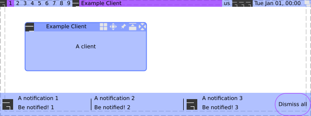

Module: naughty.list.notifications
Get a list of all currently active notifications.

-- This awful.wibar will be placed at the bottom and contain the notifications. local notif_wb = awful.wibar { position = 'bottom', height = 48, visible = #naughty.active > 0, } notif_wb:setup { nil, { base_layout = wibox.widget { spacing_widget = wibox.widget { orientation = 'vertical', span_ratio = 0.5, widget = wibox.widget.separator, }, forced_height = 30, spacing = 3, layout = wibox.layout.flex.horizontal }, widget_template = { { naughty.widget.icon, { naughty.widget.title, naughty.widget.message, { layout = wibox.widget { -- Adding the wibox.widget allows to share a -- single instance for all spacers. spacing_widget = wibox.widget { orientation = 'vertical', span_ratio = 0.9, widget = wibox.widget.separator, }, spacing = 3, layout = wibox.layout.flex.horizontal }, widget = naughty.list.widgets, }, layout = wibox.layout.align.vertical }, spacing = 10, fill_space = true, layout = wibox.layout.fixed.horizontal }, margins = 5, widget = wibox.container.margin }, widget = naughty.list.notifications, }, -- Add a button to dismiss all notifications, because why not. { { text = 'Dismiss all', align = 'center', valign = 'center', widget = wibox.widget.textbox }, buttons = gears.table.join( awful.button({ }, 1, function() naughty.destroy_all_notifications() end) ), forced_width = 75, shape = gears.shape.rounded_bar, shape_border_width = 1, shape_border_color = beautiful.bg_highlight, widget = wibox.container.background }, layout = wibox.layout.align.horizontal } -- We don't want to have that bar all the time, only when there is content. naughty.connect_signal('property::active', function() notif_wb.visible = #naughty.active > 0 end)
require(‘gears.timer’).run_delayed_calls_now()
See also:
Info:
- Copyright: 2017 Emmanuel Lepage Vallee
- Author: Emmanuel Lepage Vallee <elv1313@gmail.com>
Constructors
| naughty.list.notifications {[args]} | Create an notification list. | |
Object properties
| notification | naughty.notification | The notificationlist parent notification. | |
| base_layout | widget | A wibox.layout to be used to place the entries. |
|
| widget_template | table | The notificationlist parent notification. | |
| style | table | A table with values to override each beautiful.notification_action values. |
|
| filter | function | A function to prevent some notifications from being added to the list. | |
| children | table | Get or set the children elements. | Inherited from wibox.widget |
| all_children | table | Get all direct and indirect children widgets. | Inherited from wibox.widget |
| forced_height | number or nil | Force a widget height. | Inherited from wibox.widget |
| forced_width | number or nil | Force a widget width. | Inherited from wibox.widget |
| opacity | number | The widget opacity (transparency). | Inherited from wibox.widget |
| visible | boolean | The widget visibility. | Inherited from wibox.widget |
| buttons | table | The widget buttons. | Inherited from wibox.widget |
Object methods
| :setup {[args]} | Set a declarative widget hierarchy description. | Inherited from wibox.widget |
| :add_button (button) | Add a new awful.button to this widget. | Inherited from wibox.widget |
| :emit_signal_recursive (signal_name, ...) | Emit a signal and ensure all parent widgets in the hierarchies also forward the signal. | Inherited from wibox.widget |
| :emit_signal (name, ...) | Emit a signal. | Inherited from gears.object |
| :connect_signal (name, func) | Connect to a signal. | Inherited from gears.object |
| :weak_connect_signal (name, func) | Connect to a signal weakly. | Inherited from gears.object |
Signals
| widget::layout_changed | When the layout (size) change. | Inherited from wibox.widget |
| widget::redraw_needed | When the widget content changed. | Inherited from wibox.widget |
| button::press | When a mouse button is pressed over the widget. | Inherited from wibox.widget |
| button::release | When a mouse button is released over the widget. | Inherited from wibox.widget |
| mouse::enter | When the mouse enter a widget. | Inherited from wibox.widget |
| mouse::leave | When the mouse leave a widget. | Inherited from wibox.widget |
Theme variables
| beautiful.notification_shape_normal | gears.shape | The shape used for a normal notification. | |
| beautiful.notification_shape_selected | gears.shape | The shape used for a selected notification. | |
| beautiful.notification_shape_border_color_normal | color | The shape border color for normal notifications. | |
| beautiful.notification_shape_border_color_selected | color | The shape border color for selected notifications. | |
| beautiful.notification_shape_border_width_normal | number | The shape border width for normal notifications. | |
| beautiful.notification_shape_border_width_selected | number | The shape border width for selected notifications. | |
| beautiful.notification_icon_size_normal | number | The notification icon size. | |
| beautiful.notification_icon_size_selected | number | The selected notification icon size. | |
| beautiful.notification_bg_normal | color | The background color for normal notifications. | |
| beautiful.notification_bg_selected | color | The background color for selected notifications. | |
| beautiful.notification_fg_normal | color | The foreground color for normal notifications. | |
| beautiful.notification_fg_selected | color | The foreground color for selected notifications. | |
| beautiful.notification_bgimage_normal | string or gears.surface | The background image for normal notifications. | |
| beautiful.notification_bgimage_selected | string or gears.surface | The background image for selected notifications. | |
List filters
| naughty.list.notifications.filter.all | All notifications. | |
| naughty.list.notifications.filter.most_recent | Only get the most recent notification(s). | |
Constructors
- naughty.list.notifications {[args]}
-
Create an notification list.
Parameters:
- args
- base_layout widget The notification list base_layout.
- filter widget The list filter.
- style table Override the beautiful values.
- style.shape_normal gears.shape
- style.shape_selected gears.shape
- style.shape_border_color_normal gears.color or string
- style.shape_border_color_selected gears.color or string
- style.shape_border_width_normal number
- style.shape_border_width_selected number
- style.icon_size number
- style.bg_normal gears.color or string
- style.bg_selected gears.color or string
- style.fg_normal gears.color or string
- style.fg_selected gears.color or string
- style.bgimage_normal gears.surface or string
- style.bgimage_selected gears.surface or string
- widget_template table A custom widget to be used for each notifications. (optional)
Returns:
-
widget
The notification list widget.
- args
Object properties
- notification (naughty.notification) · 1 signal
-
The notificationlist parent notification.
See also:
Click to display more Emit signals:
property::notificationWhen the notification value changes.selfnaughty.list.notifications The object which changed (useful when connecting many object to the same callback).new_valuenotification The new value affected to the property.
- base_layout (widget) · 1 signal · 1 theme variable
-
A
wibox.layoutto be used to place the entries.If no layout is specified, a wibox.layout.fixed.vertical will be created automatically.
See also:
- wibox.layout.fixed.horizontal
- wibox.layout.fixed.vertical
- wibox.layout.flex.horizontal
- wibox.layout.flex.vertical
- wibox.layout.grid
Click to display more Emit signals:
property::base_layoutWhen the base_layout value changes.selfnaughty.list.notifications The object which changed (useful when connecting many object to the same callback).new_valuebase_layout The new value affected to the property.
Consumed theme variables:
Theme variable Usage beautiful.notification_spacing - widget_template (table) · 1 signal
-
The notificationlist parent notification.
Click to display more Emit signals:
property::widget_templateWhen the widget_template value changes.selfnaughty.list.notifications The object which changed (useful when connecting many object to the same callback).new_valuewidget_template The new value affected to the property.
- style (table) · 1 signal · 14 theme variables
-
A table with values to override each
beautiful.notification_actionvalues.
Click to display more Emit signals:
property::styleWhen the style value changes.selfnaughty.list.notifications The object which changed (useful when connecting many object to the same callback).new_valuestyle The new value affected to the property.
Consumed theme variables:
Theme variable Usage beautiful.notification_shape_normal Fallback. beautiful.notification_shape_selected Fallback. beautiful.notification_shape_border_color_normal Fallback. beautiful.notification_shape_border_color_selected Fallback. beautiful.notification_shape_border_width_normal Fallback. beautiful.notification_shape_border_width_selected Fallback. beautiful.notification_icon_size_normal Fallback. beautiful.notification_icon_size_selected Fallback. beautiful.notification_bg_normal Fallback. beautiful.notification_bg_selected Fallback. beautiful.notification_fg_normal Fallback. beautiful.notification_fg_selected Fallback. beautiful.notification_bgimage_normal Fallback. beautiful.notification_bgimage_selected Fallback. - filter (function) · 1 signal
-
A function to prevent some notifications from being added to the list.
Click to display more Emit signals:
property::filterWhen the filter value changes.selfnaughty.list.notifications The object which changed (useful when connecting many object to the same callback).new_valuefilter The new value affected to the property.
- children (table) · Inherited from wibox.widget
-
Get or set the children elements.
Type constraints:
- children table The children.
- all_children (table) · Inherited from wibox.widget
-
Get all direct and indirect children widgets.
This will scan all containers recursively to find widgets
Warning: This method it prone to stack overflow id the widget, or any of its
children, contain (directly or indirectly) itself.
Type constraints:
- children table The children.
- forced_height (number or nil) · Inherited from wibox.widget
-
Force a widget height.
Type constraints:
- height
number or nil
The height (
nilfor automatic)
- height
number or nil
The height (
- forced_width (number or nil) · Inherited from wibox.widget
-
Force a widget width.
Type constraints:
- width
number or nil
The width (
nilfor automatic)
- width
number or nil
The width (
- opacity (number) · Inherited from wibox.widget
-
The widget opacity (transparency).
Type constraints:
- opacity number The opacity (between 0 and 1) (default 1)
- visible (boolean) · Inherited from wibox.widget
- The widget visibility.
- buttons (table) · Inherited from wibox.widget
-
The widget buttons.
The table contains a list of awful.button objects.
See also:
Object methods
- :setup {[args]} · Inherited from wibox.widget
-
Set a declarative widget hierarchy description.
See The declarative layout system
Parameters:
- args An array containing the widgets disposition
- :add_button (button) · Inherited from wibox.widget
-
Add a new awful.button to this widget.
Parameters:
- button awful.button The button to add.
- :emit_signal_recursive (signal_name, ...) · Inherited from wibox.widget
-
Emit a signal and ensure all parent widgets in the hierarchies also
forward the signal. This is useful to track signals when there is a dynamic
set of containers and layouts wrapping the widget.
Parameters:
- signal_name string
- ... Other arguments
- :emit_signal (name, ...) · Inherited from gears.object
-
Emit a signal.
Parameters:
- name string The name of the signal.
- ... Extra arguments for the callback functions. Each connected function receives the object as first argument and then any extra arguments that are given to emit_signal().
- :connect_signal (name, func) · Inherited from gears.object
-
Connect to a signal.
Parameters:
- name string The name of the signal.
- func function The callback to call when the signal is emitted.
- :weak_connect_signal (name, func) · Inherited from gears.object
-
Connect to a signal weakly.
This allows the callback function to be garbage collected and automatically disconnects the signal when that happens.
Warning: Only use this function if you really, really, really know what you are doing.
Parameters:
- name string The name of the signal.
- func function The callback to call when the signal is emitted.
Signals
- widget::layout_changed · Inherited from wibox.widget
-
When the layout (size) change.
This signal is emitted when the previous results of
:layout()and:fit()are no longer valid. Unless this signal is emitted,:layout()and:fit()must return the same result when called with the same arguments.See also:
- widget::redraw_needed · Inherited from wibox.widget
-
When the widget content changed.
This signal is emitted when the content of the widget changes. The widget will
be redrawn, it is not re-layouted. Put differently, it is assumed that
:layout()and:fit()would still return the same results as before.See also:
- button::press · Inherited from wibox.widget
-
When a mouse button is pressed over the widget.
Arguments:
- self table The current object instance itself.
- lx number The horizontal position relative to the (0,0) position in the widget.
- ly number The vertical position relative to the (0,0) position in the widget.
- button number The button number.
- mods table The modifiers (mod4, mod1 (alt), Control, Shift)
- find_widgets_result The entry from the result of
wibox.drawable:find_widgets for the position that the mouse hit.
- drawable wibox.drawable The drawable containing the widget.
- widget widget The widget being displayed.
- hierarchy wibox.hierarchy The hierarchy managing the widget’s geometry.
- x number An approximation of the X position that the widget is visible at on the surface.
- y number An approximation of the Y position that the widget is visible at on the surface.
- width number An approximation of the width that the widget is visible at on the surface.
- height number An approximation of the height that the widget is visible at on the surface.
- widget_width number The exact width of the widget in its local coordinate system.
- widget_height number The exact height of the widget in its local coordinate system.
See also:
- button::release · Inherited from wibox.widget
-
When a mouse button is released over the widget.
Arguments:
- self table The current object instance itself.
- lx number The horizontal position relative to the (0,0) position in the widget.
- ly number The vertical position relative to the (0,0) position in the widget.
- button number The button number.
- mods table The modifiers (mod4, mod1 (alt), Control, Shift)
- find_widgets_result The entry from the result of
wibox.drawable:find_widgets for the position that the mouse hit.
- drawable wibox.drawable The drawable containing the widget.
- widget widget The widget being displayed.
- hierarchy wibox.hierarchy The hierarchy managing the widget’s geometry.
- x number An approximation of the X position that the widget is visible at on the surface.
- y number An approximation of the Y position that the widget is visible at on the surface.
- width number An approximation of the width that the widget is visible at on the surface.
- height number An approximation of the height that the widget is visible at on the surface.
- widget_width number The exact width of the widget in its local coordinate system.
- widget_height number The exact height of the widget in its local coordinate system.
See also:
- mouse::enter · Inherited from wibox.widget
-
When the mouse enter a widget.
Arguments:
- self table The current object instance itself.
- find_widgets_result The entry from the result of
wibox.drawable:find_widgets for the position that the mouse hit.
- drawable wibox.drawable The drawable containing the widget.
- widget widget The widget being displayed.
- hierarchy wibox.hierarchy The hierarchy managing the widget’s geometry.
- x number An approximation of the X position that the widget is visible at on the surface.
- y number An approximation of the Y position that the widget is visible at on the surface.
- width number An approximation of the width that the widget is visible at on the surface.
- height number An approximation of the height that the widget is visible at on the surface.
- widget_width number The exact width of the widget in its local coordinate system.
- widget_height number The exact height of the widget in its local coordinate system.
See also:
- mouse::leave · Inherited from wibox.widget
-
When the mouse leave a widget.
Arguments:
- self table The current object instance itself.
- find_widgets_result The entry from the result of
wibox.drawable:find_widgets for the position that the mouse hit.
- drawable wibox.drawable The drawable containing the widget.
- widget widget The widget being displayed.
- hierarchy wibox.hierarchy The hierarchy managing the widget’s geometry.
- x number An approximation of the X position that the widget is visible at on the surface.
- y number An approximation of the Y position that the widget is visible at on the surface.
- width number An approximation of the width that the widget is visible at on the surface.
- height number An approximation of the height that the widget is visible at on the surface.
- widget_width number The exact width of the widget in its local coordinate system.
- widget_height number The exact height of the widget in its local coordinate system.
See also:
Theme variables
- beautiful.notification_shape_normal (gears.shape)
-
The shape used for a normal notification.
See also:
- beautiful.notification_shape_selected (gears.shape)
-
The shape used for a selected notification.
See also:
- beautiful.notification_shape_border_color_normal (color)
-
The shape border color for normal notifications.
See also:
- beautiful.notification_shape_border_color_selected (color)
-
The shape border color for selected notifications.
See also:
- beautiful.notification_shape_border_width_normal (number)
- The shape border width for normal notifications.
- beautiful.notification_shape_border_width_selected (number)
- The shape border width for selected notifications.
- beautiful.notification_icon_size_normal (number)
- The notification icon size.
- beautiful.notification_icon_size_selected (number)
- The selected notification icon size.
- beautiful.notification_bg_normal (color)
-
The background color for normal notifications.
See also:
- beautiful.notification_bg_selected (color)
-
The background color for selected notifications.
See also:
- beautiful.notification_fg_normal (color)
-
The foreground color for normal notifications.
See also:
- beautiful.notification_fg_selected (color)
-
The foreground color for selected notifications.
See also:
- beautiful.notification_bgimage_normal (string or gears.surface)
-
The background image for normal notifications.
See also:
- beautiful.notification_bgimage_selected (string or gears.surface)
-
The background image for selected notifications.
See also:
List filters
- naughty.list.notifications.filter.all
-
All notifications.
- n naughty.notification The notification.
- naughty.list.notifications.filter.most_recent
-
Only get the most recent notification(s).
To set the count, the function needs to be wrapped:
filter = function(n) return naughty.list.notifications.filter.most_recent(n, 3) end- n naughty.notification The notification.
- count number The number of recent notifications to allow. (default 1)